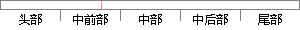

场效应管的结构和工作原理，
片段位置图

相似结果
相似片段：
开关电源、便携式电子设备、航空航天以及汽车等电子电器设备中。但因为其电流、热容量小，耐压低，一般只适用于小功率电力电子装置。 一、电力场效应管的结构和工作原理 电力场效应晶体管种类和结构有许多种，按导电沟道可分为P沟道和N沟道，同时又有耗尽型和增强型之分。在电力电子装置中，主要应用N沟道增强型
| 对比库： | WriteCheck云资源库 |
| 来源： | ruida.org.cn 查看来源 |
| 发布时间： | 2012-11-12 |
| 相似率 | 100% （严重抄袭） |